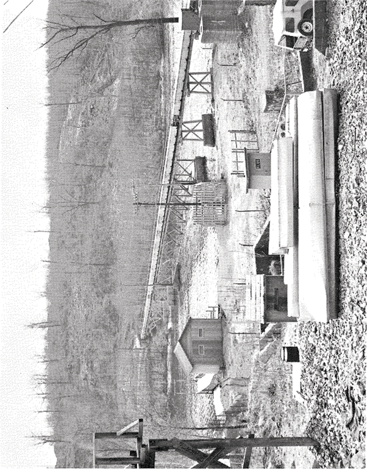
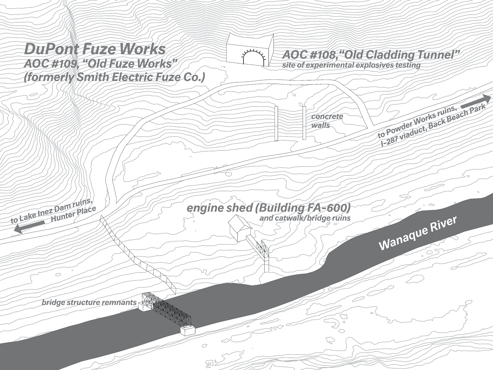

55
Past this fence, the road forks, with the uphill part forming a small loop as it rejoins the lower. This is the site of AOC #109, the “Old Fuze Works.” There are crumbling infrastructures everywhere; Tangled old power lines, bridges, tunnels, buildings, catwalks, all left to rot. Undeterred by topography, hydrography, or geology, the plant stayed connected as it expanded, leaving linear traces and individual ruins as evidence.

Above Right: 1950’s era photo of the Fuze Works, from the booklet “DuPont Pompton Lakes Works: 75 Years, 1902-1977,” held in the DuPont vertical file at the
Pompton Lakes Public Library.
Right: View from the ridge above the Fuze Works, 1976. Photo by Terri Kennedy
56
